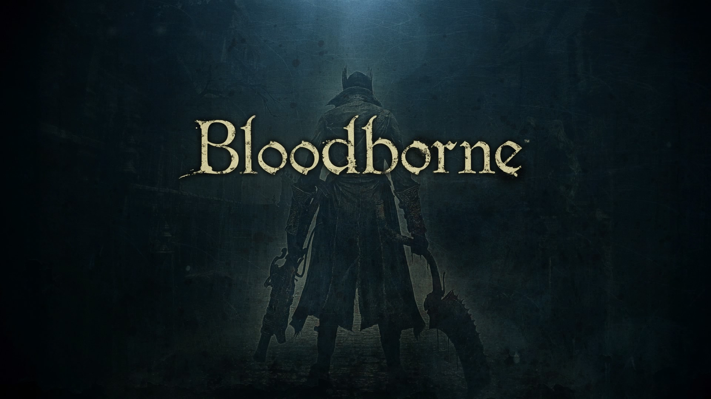

A Study on FromSoftware's Bloodborne
In this site I want to explore the world building that FromSoftware did in Bloodborne.

Image Credit: Bloodborne Title Card by FromSoftware
Gameplay and What's at Stake
Video Credit: Bloodborne - Opening Cutscene by The Gameplay Dudes on YouTube
Narrative
Take a moment to listen to this song that is featured in the game, I found that it really captures the creepy yet entrancing feelings felt through out the game.
Music Credit: The Night Unfurls by Ryan Amon from the Bloodborne Original Soundtrack
Video Credit: Bloodborne Gameplay Cool Moments by Shaun Bolen on YouTube
The Ending
Conclusion
Refrences